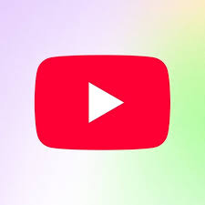
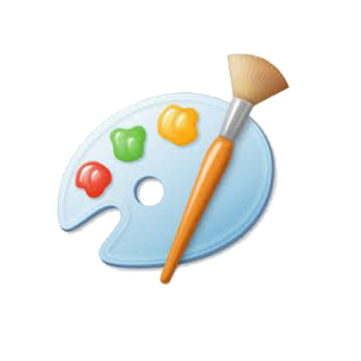
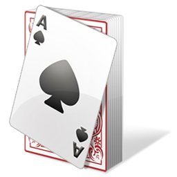
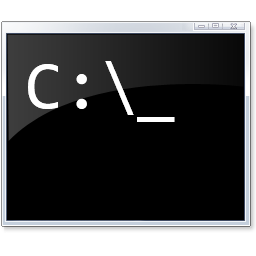
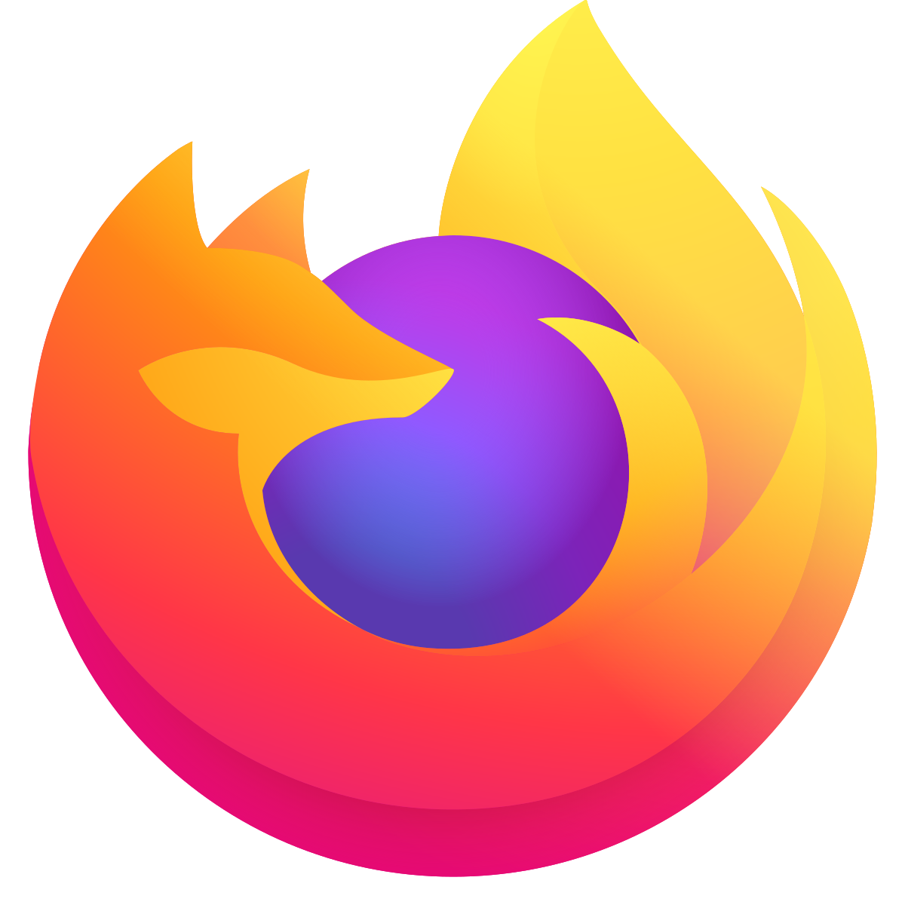

YouTube

Notepad

Paint
Explorer

Chrome

Minesweeper

Solitaire

Command Prompt

Credits

Firefox 77.0.1 Remake

Supermium For Windows 9
Tweet@rama
Windows 9 Pro Beta 1
For testing purposes only. Build 1.0 This version of Windows is activated.